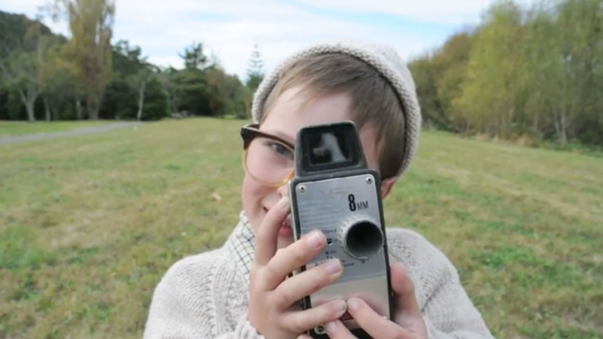

Lies and Fabrications
48 hour film challenge
Our group put together this short biopic film for entry in the 2010 V 48 Hour Film compeitition.
'Lies and Fabrications' follows the story of Martin Boyle, an artist whose opus is tragically plagiarized by his old friend, Sydney Manson.
